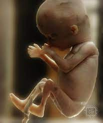

Symptoms and Fetal Development
Though each mom-to-be’s body changes in different ways throughout pregnancy, your baby belly might be pretty visible by the time you’re five months pregnant. This month, you’ll likely be adjusting to the physical changes that come with a growing bump and your changing center of gravity. Read on to learn about common pregnancy symptoms at five months, what happens at the mid-pregnancy ultrasound, how your baby is developing, and more!
Common Pregnancy Symptoms at Fifth Month Pregnant
At six months pregnant, you’re nearing the end of your second trimester. You might be feeling pretty energized and excited about your baby's arrival in a few months, even if you're dealing with common pregnancy symptoms like heartburn, hot flashes, and backaches. Inside your belly, your baby is making great strides in development this month, as his lungs and sucking reflex are nearly ready for when he makes his grand entrance! Want to learn more about what’s to come this month? Read on!
Common Pregnancy Symptoms at Sixth Month Pregnant
At six months pregnant, you might experience some of these common pregnancy symptoms, but likely not all of them:
-
Heart Burn:
Those pesky pregnancy hormones are at it again, this time relaxing the valve between your stomach and esophagus. This allows stomach acids to leak into the esophagus, causing that uncomfortable burning sensation. If you’re bothered by heartburn, try eating about six smaller meals each day (rather than three larger meals), and try to avoid foods that seem to make it worse, such as spicy or fried dishes, citrus, and chocolate
-
Back Aches:
When you are six months pregnant and your belly continues to grow, the extra weight gain begins to place more strain on your back muscles, and can cause lower back pain. A warm bath can be soothing, and if the pain persists, speak to your healthcare provider about safe pain medications you can take.
-
Hot Flashes:
If you thought hot flashes were only a sign of menopause, think again! It’s not uncommon for moms-to-be (who are burning more calories and generating more heat) to experience this symptom occasionally. If hot flashes are making you uncomfortable and sweaty, stay hydrated, wear loose-fitting clothing, and consider using a portable fan at home and at work.
-
Dizziness:
At six months pregnant, as your belly grows, your circulation is changing, and there may be less blood flow to your upper body and head. If you feel lightheaded, move slowly when changing positions, drink plenty of water, and avoid standing for long periods of time.
-
Leg Cramps:
Some moms-to-be get cramping in their lower legs, particularly at night time. The jury is still out on what exactly causes these cramps, but regular exercise, staying hydrated, and massaging the calf muscles before bed can sometimes help prevent them. If a cramp does strike, try stretching the muscle, taking a warm bath, or applying an ice pack to the affected area.
-
Fast heartbeat:
The thought of meeting your little one might make your heart beat a little more quickly than usual, but did you know that an increased heart rate can be normal during pregnancy? Your heart is working extra hard to pump up to 50 percent more blood around your body now. If you notice that your heart rate stays elevated for long stretches, or if you also have difficulty breathing, speak to your healthcare provider.
Week by Week Fetal growth

How Is Your Baby Developing This Month?
Your baby’s eyelids are still shut, but those little eyeballs are moving behind the lids. When he's not asleep, your baby might also respond to loud noises or your voice by moving in response. By this month, your little one’s lungs are completely formed. Of course, there’s still a way to go before they’re ready to function in the outside world. Your baby’s sucking reflex is improving, and he might be looking for his thumb right now while you’re reading this article. Aside from vital organs and internal systems, your baby has also developed something else that’s very important when you’re about six months pregnant — his very own fingerprints and toe prints. He may have gotten his genes from mom and dad, but these prints are all his!
How Big Is Your Baby When You’re Sixth Month Pregnant?
Wondering about your baby’s size when you’re six months pregnant? He could weigh more than 1 pound and be almost 12 inches long around this time.
What Does a Fetus Look Like at Sixth Month?
Check out these illustrations for a glimpse at what your baby might look like when you’re six months pregnant:
Changes to Your Body at Sixth Month Pregnant
What does six months pregnant look like? It’s different for every mom-to-be, but by this month, you may have gained somewhere between 10 to 15 pounds. Your changing body and your weight gain at six months pregnant may affect how you feel about how you look from day to day. Some moms-to-be love their pregnancy bodies, and that’s great! For other women, it’s perfectly normal to go back and forth between feeling more or less comfortable with their appearance each day. Your body is doing an amazing job right now, so try to remember to give it (and yourself) the love you both deserve. Moderate exercise and a healthy diet can help you feel your best. These strategies can also ensure you have the strength you’ll need for labor and delivery. As your belly grows and your center of gravity changes, certain activities, like your usual exercise routine or even sleeping, can become a little more difficult at six months pregnant. Another one of these activities is sex. If you and your partner feel like having sex, great! If you don’t, that’s OK too.
How Far Along Are You at Sixth Month Pregnant?
At six months pregnant, you’re finishing up the second trimester, and you might be wondering just how many weeks six months pregnant is. The answer can be confusing because there are several different ways the weeks of pregnancy can be split into months. It turns out that six months pregnant could start at week 21, 22, or 23 and extend through week 24 to week 27 or 28.
Checklist for When You’re Sixth Month Pregnant
- If you’re experiencing “momnesia” (i.e. forgetfulness, absentmindedness, having trouble concentrating, and general spaciness) read up on what may be behind “pregnancy brain” and what you can do about it.
- As your bump grows and your pregnancy progresses you may have some questions about how sex during pregnancy is different. Speak to your healthcare provider about any specific questions you have and keep the lines of communication open with your partner.
- Start finalizing your baby shower registry list as your baby shower might be just around the corner. Your shower host will need the registry details before sending out the invitations, so ask her when she needs your finished registry list by.